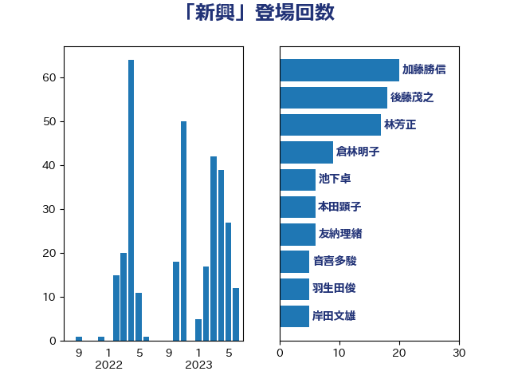

単語「新興」

| 加藤勝信 | 自由民主党 | 20 回 |
| 後藤茂之 | 自由民主党 | 18 回 |
| 林芳正 | 自由民主党 | 17 回 |
| 倉林明子 | 日本共産党 | 9 回 |
| 池下卓 | 日本維新の会 | 6 回 |
| 本田顕子 | 自由民主党 | 6 回 |
| 友納理緒 | 自由民主党 | 6 回 |
| 音喜多駿 | 日本維新の会 | 5 回 |
| 羽生田俊 | 自由民主党 | 5 回 |
| 岸田文雄 | 自由民主党 | 5 回 |
| 長谷川淳二 | 自由民主党 | 4 回 |
| 金子恭之 | 自由民主党 | 4 回 |
| 源馬謙太郎 | 立憲民主党 | 4 回 |
| 松本尚 | 自由民主党 | 4 回 |
| 大塚耕平 | 国民民主党 | 4 回 |
| 西村康稔 | 自由民主党 | 3 回 |
| 田中健 | 国民民主党 | 3 回 |
| ながえ孝子 | 無所属 | 3 回 |
| 齋藤健 | 自由民主党 | 2 回 |
| 鈴木敦 | 国民民主党 | 2 回 |
| 落合貴之 | 立憲民主党 | 2 回 |
| 自見はなこ | 自由民主党 | 2 回 |
| 牧野たかお | 自由民主党 | 2 回 |
| 河野太郎 | 自由民主党 | 2 回 |
| 松本剛明 | 自由民主党 | 2 回 |
| 松山政司 | 自由民主党 | 2 回 |
| 末松信介 | 自由民主党 | 2 回 |
| 新妻秀規 | 公明党 | 2 回 |
| 川田龍平 | 立憲民主党 | 2 回 |
| 大家敏志 | 自由民主党 | 2 回 |
| 塩田博昭 | 公明党 | 2 回 |
| 中川郁子 | 自由民主党 | 2 回 |
| 中島克仁 | 立憲民主党 | 2 回 |
| 三木圭恵 | 日本維新の会 | 2 回 |
| 高市早苗 | 自由民主党 | 1 回 |
| 鈴木俊一 | 自由民主党 | 1 回 |
| 野田国義 | 立憲民主党 | 1 回 |
| 茂木敏充 | 自由民主党 | 1 回 |
| 篠原豪 | 立憲民主党 | 1 回 |
| 福岡資麿 | 自由民主党 | 1 回 |
| 石川香織 | 立憲民主党 | 1 回 |
| 田畑裕明 | 自由民主党 | 1 回 |
| 田村智子 | 日本共産党 | 1 回 |
| 田村まみ | 国民民主党 | 1 回 |
| 牧義夫 | 立憲民主党 | 1 回 |
| 熊谷裕人 | 立憲民主党 | 1 回 |
| 瀬戸隆一 | 自由民主党 | 1 回 |
| 沢田良 | 日本維新の会 | 1 回 |
| 柳ヶ瀬裕文 | 日本維新の会 | 1 回 |
| 松野博一 | 自由民主党 | 1 回 |
| 松下新平 | 自由民主党 | 1 回 |
| 杉田水脈 | 自由民主党 | 1 回 |
| 打越さく良 | 立憲民主党 | 1 回 |
| 平木大作 | 公明党 | 1 回 |
| 平将明 | 自由民主党 | 1 回 |
| 山際大志郎 | 自由民主党 | 1 回 |
| 小熊慎司 | 立憲民主党 | 1 回 |
| 小林鷹之 | 自由民主党 | 1 回 |
| 塩村あやか | 立憲民主党 | 1 回 |
| 堤かなめ | 立憲民主党 | 1 回 |
| 吉田とも代 | 日本維新の会 | 1 回 |
| 吉川元 | 立憲民主党 | 1 回 |
| 古賀友一郎 | 自由民主党 | 1 回 |
| 古川禎久 | 自由民主党 | 1 回 |
| 佐藤英道 | 公明党 | 1 回 |
| 住吉寛紀 | 日本維新の会 | 1 回 |
| 伊佐進一 | 公明党 | 1 回 |
| 中田宏 | 自由民主党 | 1 回 |
| 中川康洋 | 公明党 | 1 回 |
| 上野賢一郎 | 自由民主党 | 1 回 |
| 上杉謙太郎 | 自由民主党 | 1 回 |